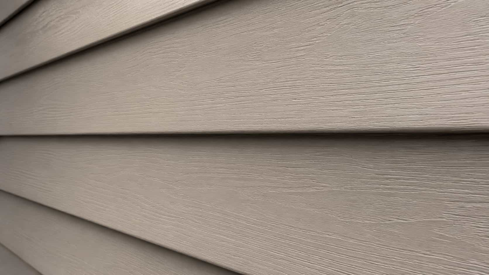
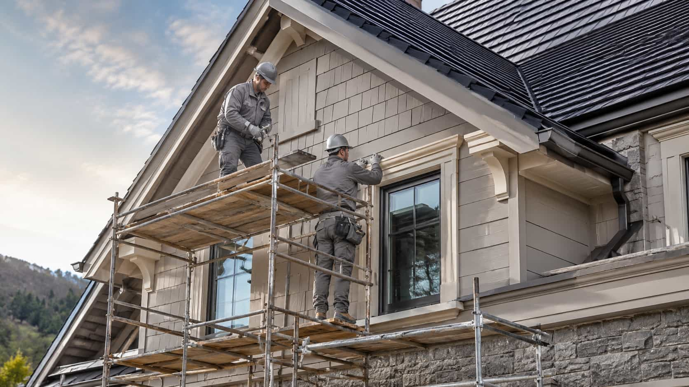
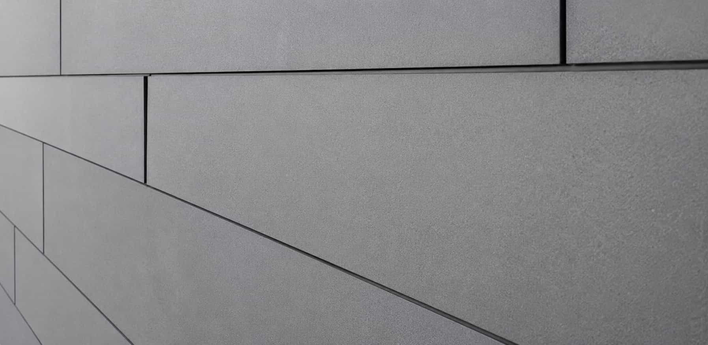
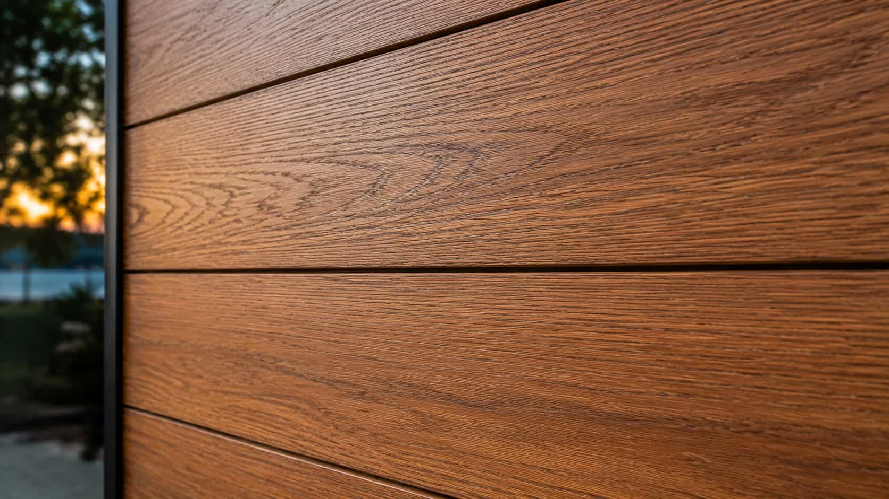
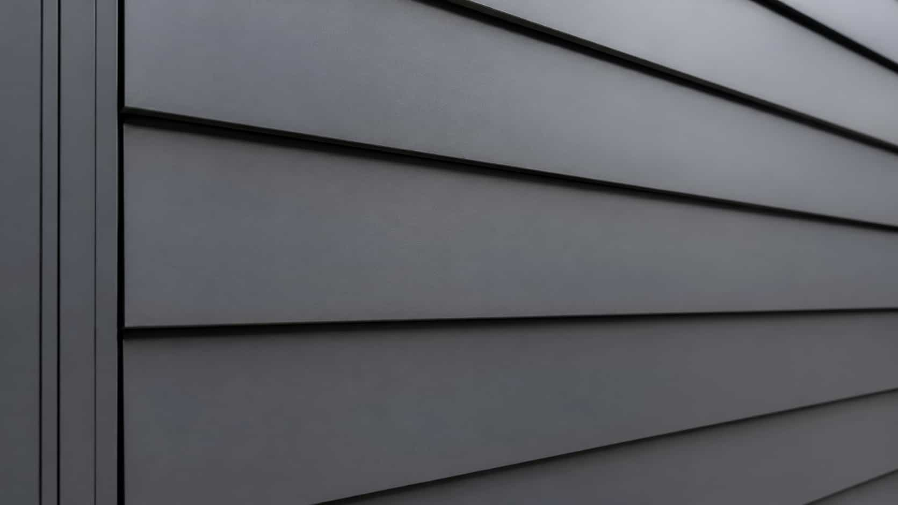

Siding service paths
Compare Siding Services By Project Goal
Paneli organizes siding provider comparison around homeowner intent: installation, replacement, repair, and consultation. Materials stay inside the comparison flow, not as separate main service pages.
Main service categories
Four siding paths, built around what homeowners actually need.
The main services are not based on siding materials. They are based on the project goal, so homeowners can compare independent provider options more clearly.
Provider comparison, not direct siding service.
Paneli helps homeowners compare independent siding provider options. It does not install, replace, repair, inspect, paint, maintain, or consult on siding work directly.
Material mood
Different looks. Lasting performance.
Classic

Fiber Cement
Finish

Warm Wood
Accent

Clean Metal
Lines
Estimate clarity
Know what is included.
Siding estimates can vary by scope, materials, labor, cleanup, timeline, and warranty terms. Compare the details before choosing an independent provider.
Request provider optionsScope
Ask which walls, trim details, prep work, and project boundaries are included.
Materials
Compare siding type, finish, accessories, and related exterior pieces.
Labor
Review labor, removal, disposal, repairs, cleanup, and possible extras.
Warranty
Verify material and labor warranty details directly with each provider.
Important: Paneli does not set provider pricing, warranties, timelines, or project terms. Homeowners confirm details directly with independent companies.

Licensing
Insurance
Estimate detail
Provider fit lens
01
02
03
04
Service category is only the starting point.
After choosing a project path, homeowners should compare how each provider communicates, explains scope, lists estimate details, and handles warranty questions.
Credentials
Verify licensing, insurance, and company details directly with providers.
Siding experience
Ask whether the provider has experience with your project type and siding material direction.
Estimate structure
Compare whether materials, labor, disposal, repairs, and warranties are easy to understand.
Timeline fit
Review scheduling expectations and project communication before choosing.
Homeowner questions
Ask better questions before comparing estimates.
These questions help homeowners compare independent siding provider options without assuming every estimate includes the same scope.
Is the estimate itemized?
Ask whether materials, labor, disposal, trim, repairs, and possible fees are separated clearly.
Which siding materials are included?
Compare whether material type, finish, accessories, and warranty terms are described clearly.
What is the expected timeline?
Ask about availability, project phases, weather-related delays, and communication expectations.
What should the homeowner verify?
Verify licensing, insurance, estimate details, warranties, permits if needed, and company information directly.
FAQ
Siding service comparison questions.
The goal is to keep the service paths clear while reminding homeowners that providers are independent.
Ready to compare siding provider options?
Choose the service path that best matches your siding goal and compare independent provider options directly.